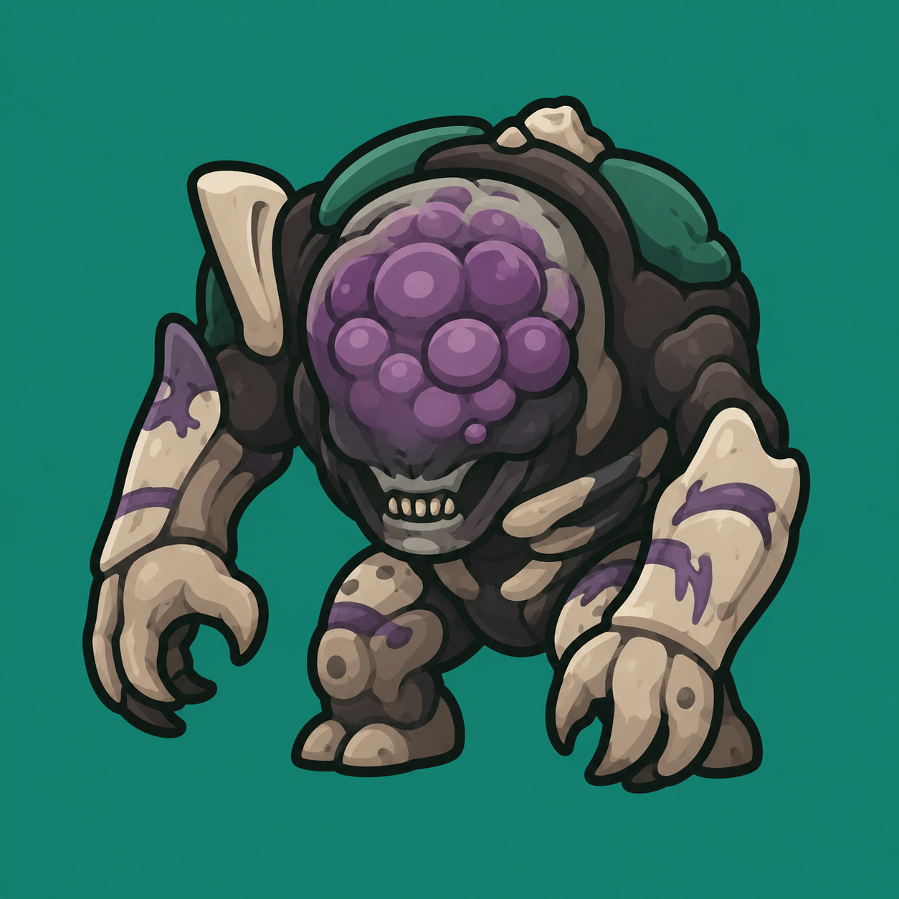

底层重构
在他人项目基础上重新整理架构，让执行、配置和界面各自负责明确的部分。

Morgath KickWindows 动作校准工具D2 Morgath Kick / 0.1
项目基于D2-Ogre-Kick重构而来。底层架构完全重构，程序更小巧；GUI 多参数可调，多分辨率适配。
v0.2.064 位 Windows 10 / 11
01 / 程序界面
主窗口完整显示分辨率、灵敏度、瞄准偏移和动作时序。改值时能立即看到应用结果，不必编辑配置文件。
确认游戏画布，再换算鼠标移动量。
修正虚空箭落点与冲刺朝向。
调整每段等待，F10 随时可停。
02 / Reconstruction Explanation
在原作者的程序基础上实现了以下改动与重构
在他人项目基础上重新整理架构，让执行、配置和界面各自负责明确的部分。
使用 Tauri 与 Rust 承载桌面端和动作执行，保留必要能力，减少程序负担。
设置、运行状态、快捷键和停止入口集中在一个窗口，改值不必来回找配置。
分辨率、灵敏度、三组瞄准偏移、六项等待时间和按键映射都可以在界面中调整。